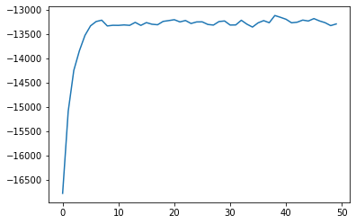
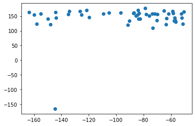
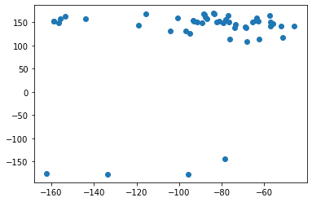

[1]:
%load_ext autoreload
%autoreload 2
[2]:
import numpy as np
import matplotlib.pyplot as plt
from simtk import unit
from simtk import openmm as omm
from simtk.openmm import app
import molsysmt as msm
from tqdm import tqdm
Alanine dipeptide in explicit solvent¶
With OpenMM from scratch¶
[3]:
from molecular_systems import files
pdbfile_path = files.alanine_dipeptide['octahedral_14.pdb']
[4]:
msm.info(pdbfile_path)
[4]:
| form | n_atoms | n_groups | n_components | n_chains | n_molecules | n_entities | n_waters | n_peptides | n_frames |
|---|---|---|---|---|---|---|---|---|---|
| pdb | 4333 | 1440 | 1438 | 1 | 1438 | 2 | 1437 | 1 | 1 |
[5]:
view = msm.view(pdbfile_path, surface=True)
view
[6]:
temperature = 300.0*unit.kelvin
collisions_rate = 1.0/unit.picoseconds
total_time = 50.0*unit.picoseconds
saving_timestep = 1.0*unit.picoseconds
integration_timestep = 2.0*unit.femtoseconds
steps_per_cicle = round(saving_timestep/integration_timestep)
n_steps = round(total_time/integration_timestep)
n_cicles = round(n_steps/steps_per_cicle)
pdbfile = app.PDBFile(pdbfile_path)
topology = pdbfile.topology
positions = pdbfile.positions
forcefield = app.ForceField('amber14-all.xml', 'amber14/tip3p.xml')
system = forcefield.createSystem(topology,
nonbondedMethod=app.PME, nonbondedCutoff=9.0*unit.angstroms,
switchDistance=7.5*unit.angstroms,
rigidWater=True, constraints=app.HBonds, hydrogenMass=None)
forces = {ii.__class__.__name__ : ii for ii in system.getForces()}
forces['NonbondedForce'].setUseDispersionCorrection(True)
forces['NonbondedForce'].setEwaldErrorTolerance(1.0e-5)
integrator = omm.LangevinIntegrator(temperature, collisions_rate, integration_timestep)
integrator.setConstraintTolerance(0.00001)
platform = omm.Platform.getPlatformByName('CUDA')
simulation_properties = {}
simulation_properties['CudaPrecision']='mixed'
# Context.
context = omm.Context(system, integrator, platform, simulation_properties)
context.setPositions(positions)
# Energy Minimization
Potential_Energy = context.getState(getEnergy=True).getPotentialEnergy()
print('Before energy minimization: {}'.format(Potential_Energy))
omm.LocalEnergyMinimizer_minimize(context)
Potential_Energy = context.getState(getEnergy=True).getPotentialEnergy()
print('After energy minimization: {}'.format(Potential_Energy))
Before energy minimization: -17415.342173066165 kJ/mol
After energy minimization: -70224.23182850215 kJ/mol
[7]:
# Initial velocities
n_atoms = topology.getNumAtoms()
velocities = np.zeros([n_atoms, 3], np.float32) * unit.nanometers/unit.picosecond
context.setVelocities(velocities)
# Reporter arrays: time, position, velocity, kinetic_energy, potential_energy
time = np.zeros([n_cicles], np.float32) * unit.picoseconds
trajectory = np.zeros([n_cicles, n_atoms, 3], np.float32) * unit.nanometers
velocity = np.zeros([n_cicles, n_atoms, 3], np.float32) * unit.nanometers/unit.picosecond
kinetic_energy = np.zeros([n_cicles], np.float32) * unit.kilocalories_per_mole
potential_energy = np.zeros([n_cicles], np.float32) * unit.kilocalories_per_mole
# Initial context in reporters
state = context.getState(getPositions=True, getVelocities=True, getEnergy=True)
time[0] = state.getTime()
trajectory[0] = state.getPositions()
velocity[0] = state.getVelocities()
kinetic_energy[0] = state.getKineticEnergy()
potential_energy[0] = state.getPotentialEnergy()
# Integration loop saving every cicle steps
for ii in tqdm(range(1, n_cicles)):
context.getIntegrator().step(steps_per_cicle)
state = context.getState(getPositions=True, getVelocities=True, getEnergy=True)
time[ii] = state.getTime()
trajectory[ii] = state.getPositions()
velocity[ii] = state.getVelocities()
kinetic_energy[ii] = state.getKineticEnergy()
potential_energy[ii] = state.getPotentialEnergy()
100%|██████████| 49/49 [05:04<00:00, 6.21s/it]
[8]:
trajectory.shape
[8]:
(50, 4333, 3)
[9]:
print('The trajectory occupies {} gigabytes.'.format(trajectory.nbytes / 1024**3))
The trajectory occupies 0.002421252429485321 gigabytes.
[10]:
plt.plot(time, potential_energy)
plt.show()

[11]:
_, _, phi_values, psi_values = msm.ramachandran_angles([topology, trajectory])
[12]:
plt.scatter(phi_values, psi_values)
plt.show()

With MolSysMT¶
With this library¶
[13]:
from molecular_systems import AlanineDipeptideExplicitSolvent
from molecular_systems.tools.md import langevin_NVT, energy_minimization
[14]:
dialanine=AlanineDipeptideExplicitSolvent(forcefield='AMBER14')
energy_minimization(dialanine)
time, trajectory, velocity, kin_energy, pot_energy = langevin_NVT(dialanine,
temperature = 300 * unit.kelvin,
friction = 1.0 / unit.picoseconds,
saving_timestep = 1.0 * unit.picoseconds,
total_time = 50.0 * unit.picoseconds)
Potential energy before minimization: -17415.52575900621 kJ/mol
Potential energy after minimization: -70408.30700900621 kJ/mol
100%|██████████| 49/49 [04:02<00:00, 4.95s/it]
[15]:
_, _, phi_values, psi_values = msm.ramachandran_angles([dialanine.topology, trajectory])
[16]:
plt.scatter(phi_values, psi_values)
[16]:
<matplotlib.collections.PathCollection at 0x7ff0d4dade50>

[17]:
view = msm.view([dialanine.topology, trajectory], surface=False)
view
[ ]: